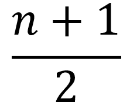
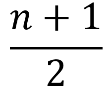

Los vértices de un árbol binario para los cuales g(V)=3 se llaman VÉRTICES INTERNOS.
De la igualdad (1) se tienen que el número de vértices internos de un árbol T, es uno menos que el número de vértices pendientes, es decir:

Los vértices de un árbol binario para los cuales g(V)=3 se llaman VÉRTICES INTERNOS.
De la igualdad (1) se tienen que el número de vértices internos de un árbol T, es uno menos que el número de vértices pendientes, es decir:

Obra publicada con Licencia Creative Commons Reconocimiento Compartir igual 4.0